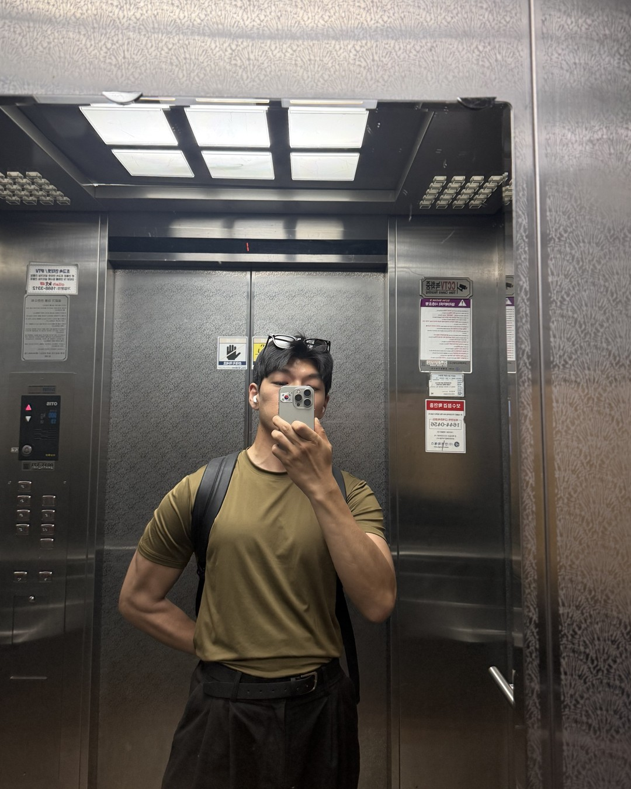
남자가 이 말을 자주 하면,
가스라이팅입니다
(한 번이 아니라, 반복이 문제예요.)
1/14
@mszexc
넘겨보세요 →
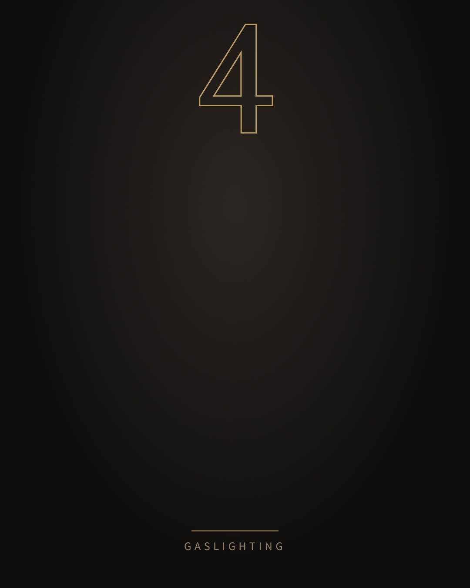
가스라이팅은
내 기억과 감정을 의심하게 만드는 말이에요.
(처음엔 사랑싸움처럼 보여요.)
2/14
@mszexc
남자들끼리 하는 말 #76
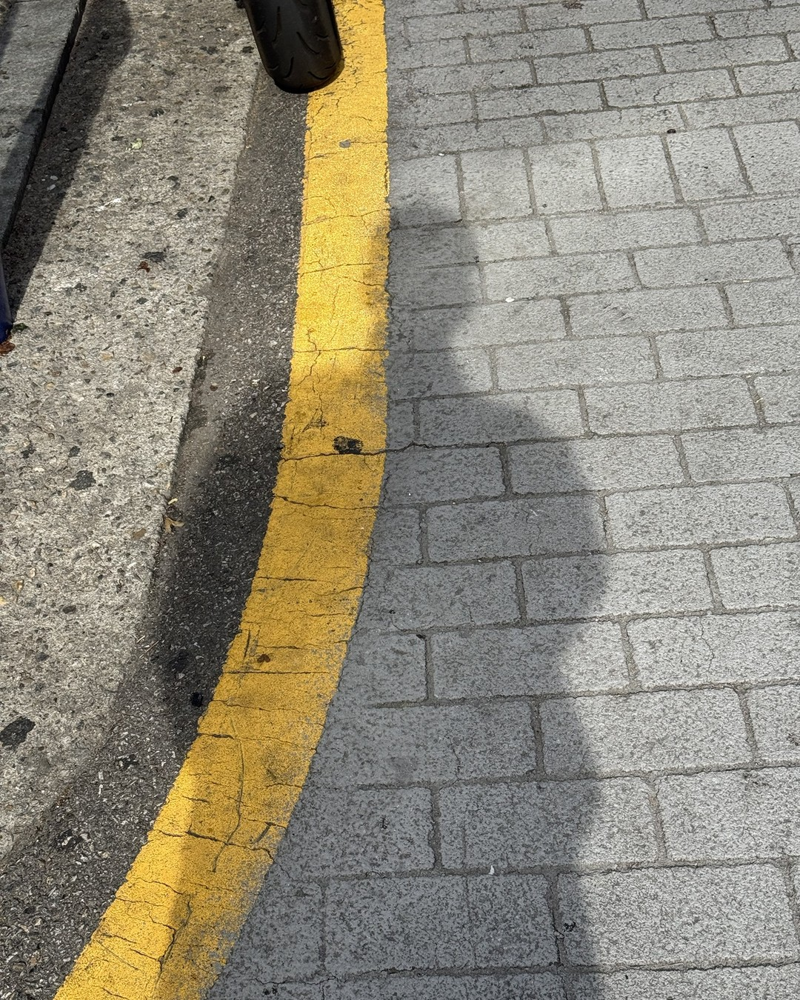
첫 번째.
"그런 말 한 적 없는데?"
(분명히 들은 말을, 없던 일로 만들어요.)
3/14
@mszexc
남자들끼리 하는 말 #76
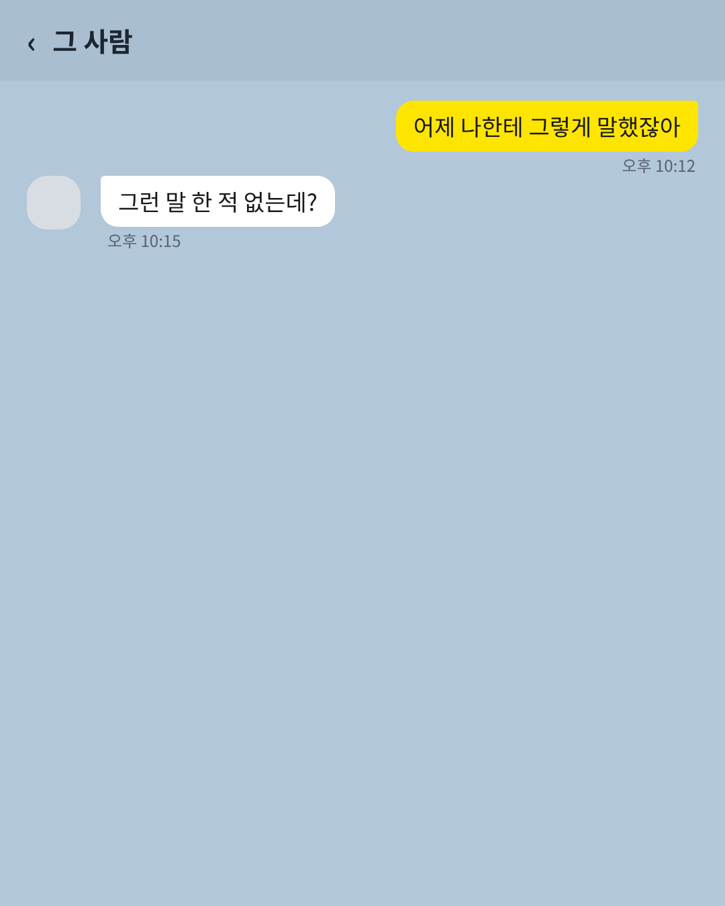
이 말이 반복되면
내 기억부터 못 믿게 돼요.
(대화를 메모하기 시작했다면, 이미 신호예요.)
4/14
@mszexc
남자들끼리 하는 말 #76

두 번째.
"너 너무 예민한 거 아니야?"
(서운한 이유가 아니라, 내 성격 탓이 돼요.)
5/14
@mszexc
남자들끼리 하는 말 #76
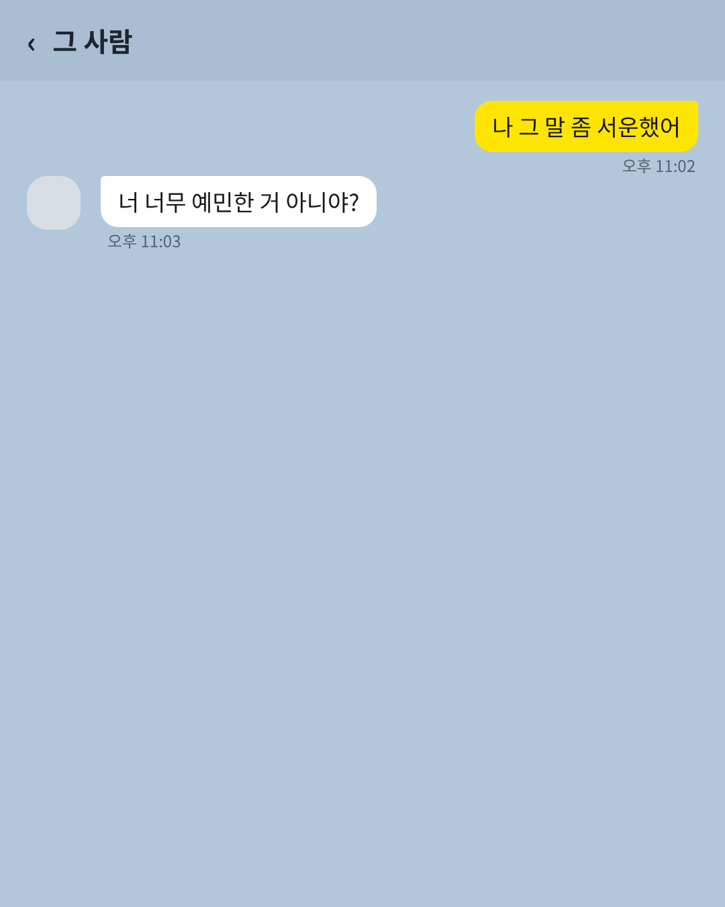
세 번째.
"다른 사람들은 다 괜찮다는데."
(확인할 수 없는 "다들"을 데려와요.)
6/14
@mszexc
남자들끼리 하는 말 #76
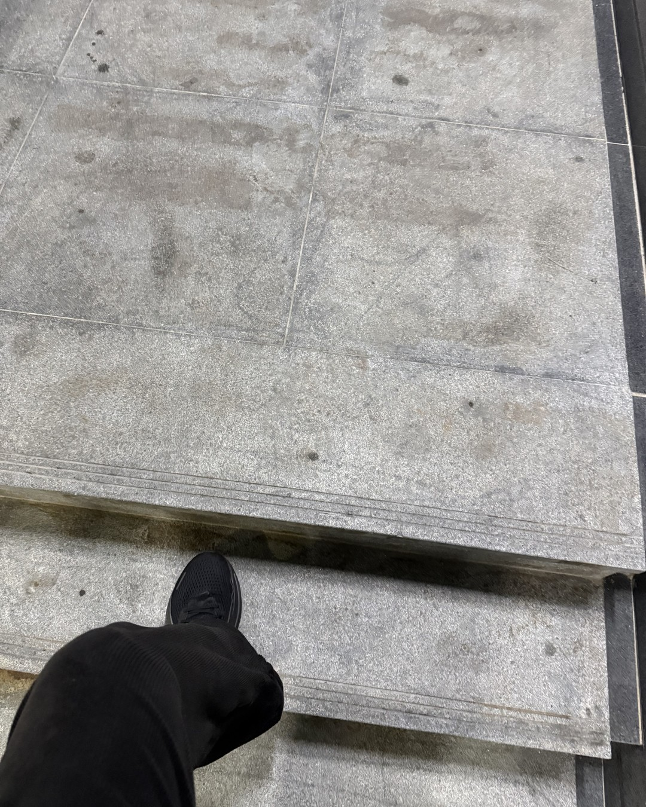
네 번째.
"너 때문에 내가 이렇게 된 거잖아."
(그의 행동이 어느새 내 책임이 돼요.)
7/14
@mszexc
남자들끼리 하는 말 #76
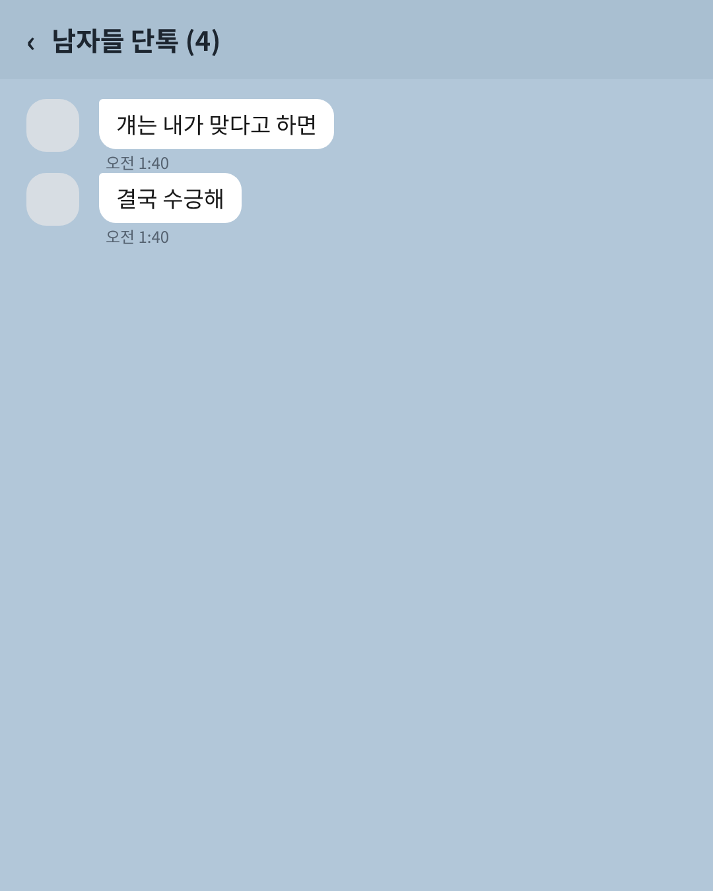
남자들끼리는 이렇게 말해요.
"걔는 내가 맞다고 하면 결국 수긍해."
(이건 대화가 아니라, 길들이기예요.)
8/14
@mszexc
남자들끼리 하는 말 #76
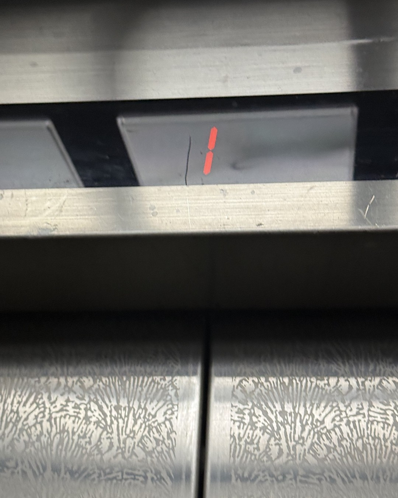
구별할 건 하나예요.
싸운 뒤 늘 내가 사과하고 있는지.
(내가 뭘 잘못했는지 모르는 채로요.)
9/14
@mszexc
남자들끼리 하는 말 #76
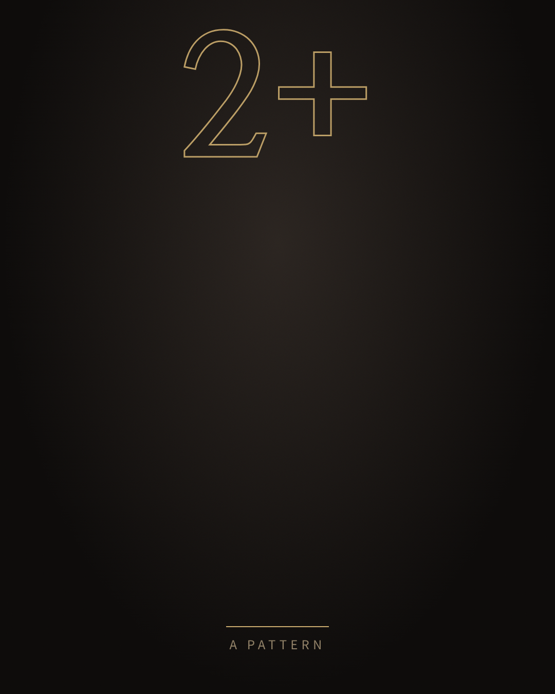
네 개 중 두 개 이상, 자주라면
사랑싸움이 아니라 패턴이에요.
(한두 번 다투는 건 누구에게나 있어요.)
10/14
@mszexc
남자들끼리 하는 말 #76
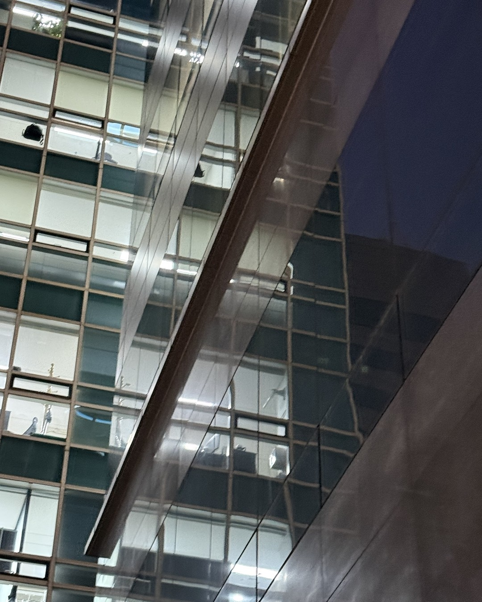
이런 말을 들으면 이렇게.
"나는 그렇게 들었어. 내 기억도 맞아."
(따지지 말고, 내 기억을 지키세요.)
11/14
@mszexc
남자들끼리 하는 말 #76
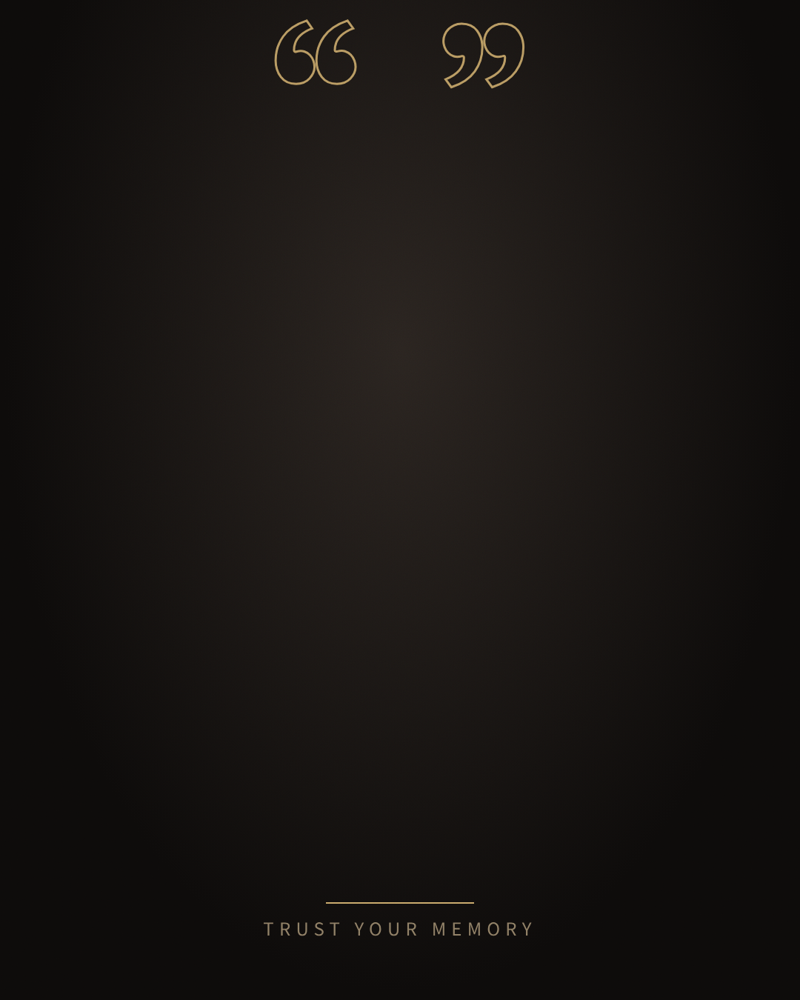
그리고 혼자 판단하지 마세요.
믿을 수 있는 사람에게 그대로 말해 보세요.
(밖에서 들으면 바로 보이는 경우가 많아요.)
12/14
@mszexc
남자들끼리 하는 말 #76
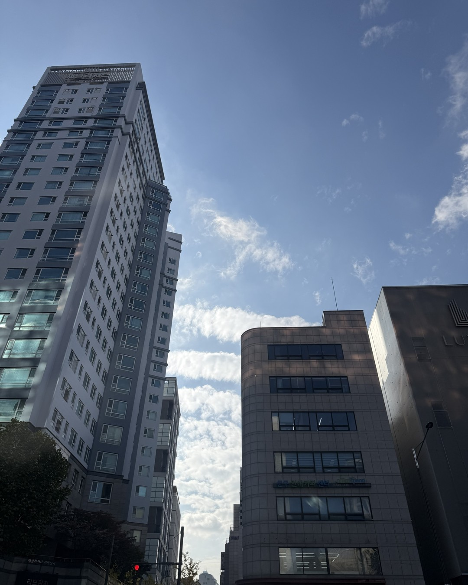
사랑하는 사람은
내 기억을 의심하게 만들지 않아요.
13/14
@mszexc
남자들끼리 하는 말 #76
이것만 기억하세요.
"내가 예민한가?"가 자꾸 든다면, 그의 말부터 의심하세요.
남자가 하는 말의 뜻은 전자책 1·2권에 · 프로필 링크에서 무료로 받아보세요
14/14
@mszexc
남자들끼리 하는 말 #76